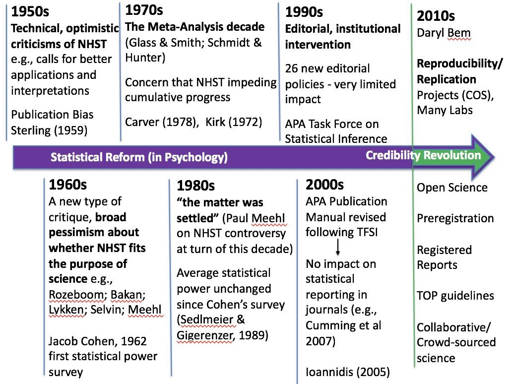
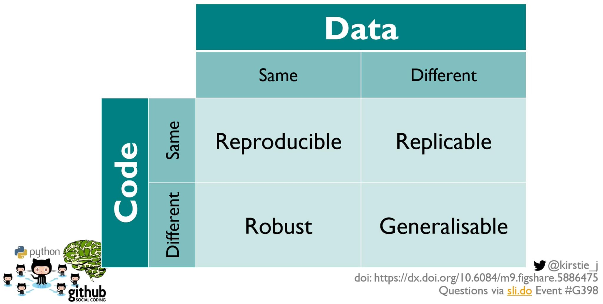

Research Data & Methods Team, Center for Advanced Internet Studies (CAIS)
Department of Psychology, Universitas Airlangga
The 5th International Conference on Psychology and Education (ICPE) 2025
Dr. Rizqy Amelia Zein
How Psychological Research Can Be Made Reproducible
A first-person perspective on open and reproducible science
AGENDA
- Replication Crisis and Why Reproducibility Matters
- At the Individual Level: The Reproducibility Ladder
- At the Systemic Level: Culture Change
- Conclusions
01
Replication Crisis — and Why Reproducibility Matters
Let’s Start With a Thought Experiment
You read a fascinating finding in a top journal and want to build your research on it.
- Question 1: If another team ran the same study again with new participants, would they find the same result?
- Question 2: If you took the original data and the original analysis code, would you get the same numbers reported in the paper?
- Intuitively, we assume the answer to both is “yes, of course it should be! It’s published science in a top Q1 journal!”
- Over the last 15 years, researchers actually checked. The answers were… rather uncomfortable.
How It Started (early 2010s)
- 2011 — Bem’s “precognition” paper: a top journal (Journal of Personality and Social Psychology - JPSP) published evidence that people can feel the future (Bem, 2011) by using standard methods and standard statistics. If the method can “prove” the impossible, what does that say about the method?
- 2011 — The Stapel fraud case: a prominent social psychologist was found to have fabricated data in dozens of published papers.
- 2011 — “False-Positive Psychology” (Simmons, Nelson, & Simonsohn): showed that ordinary, small, undisclosed analytic choices can make anything statistically significant — they “demonstrated” that listening to a song makes people feel younger.
- These events triggered a field-wide question: how much of our literature can we actually trust?
But the problem started much earlier than that

The Multi-Site Replication Projects
Large teams systematically re-ran published studies with new data, and here is what came back:
36%
of 100 psychology studies replicated — Open Science Collaboration (2015)
61%
of 18 economics lab experiments replicated — Camerer et al. (2016)
62%
of 21 social-science studies from Nature & Science replicated — Camerer et al. (2018)
49%
of 164 papers across 12 disciplines replicated — COS SCORE project (Nature, April 2026)
- Even when effects did replicate, they were on average only about half as large as originally reported (i.e., “The Decline Effect”) — SCORE found the same pattern again in 2026.
- SCORE is the largest check yet: 865 researchers assessed 3,900 papers (2009–2018, 62 journals, spanning economics, psychology, political science, sociology, and more).
- This pattern, across psychology, economics, and beyond, now confirmed at scale, is what the media dubbed the “replication crisis.”
Three Concepts You Must Not Confuse
Following Barba (2018) and The Turing Way, people mix these up all the time:
Reproducibility (🇮🇩 “reka ulang”)
Same data + same analysis → same result. Someone else (or future you) re-runs your analysis on your data and gets the numbers in your paper.
Replicability (🇮🇩 “coba ulang”)
New data + same method → similar result. An independent team repeats the study with new participants and finds a comparable effect.
Robustness (🇮🇩 “keandalan”)
Same data + new analysis → same result or at least, similar conclusion. The finding remains stable when different analytical strategies are used.
Notice the Differences

The Really Uncomfortable Part
Let’s forget collecting new data (i.e., replication) for a moment. Can we even reproduce the original numbers from the original data? (i.e., “reproducibility”)
- Hardwicke et al. (2018) tried to reproduce results from papers with mandatory open data in the journal Cognition: only 11 of 35 papers were reproducible without help from the original authors.
- Artner et al. (2021) could reproduce only ~70% of major statistical claims from published psychology articles and some only after considerable detective work.
- Crüwell et al. (2023) checked “open data” badges in Psychological Science: only 1 out of 14 articles was rated fully computationally reproducible.
- The SCORE project (Nature, 2026) re-ran the same analysis on the original data for 143 papers: 74% reproduced at least approximately, but only 54% precisely.
- Data were available for just 24% of the 600 papers assessed, and success dropped to 11% (precise) when the dataset had to be rebuilt from public sources, versus 77% when both data and code were shared.
- And this directly affects people’s lives: the famous Reinhart & Rogoff austerity paper, which is widely used to justify real economic policies, contained a simple Excel error discovered only when a graduate student got the spreadsheet (Herndon et al., 2014).
Why Does This Happen?
It’s mostly not fraud, but ordinary humans following the incentives.
- Publication bias: journals prefer novel, positive, “clean” results. Therefore, null results are often being kept into the file drawer.
- Publish or perish: careers are built on the number of publications, not on their substantive quality.
- Questionable research practices (QRPs): a grey zone between good practice and misconduct (John et al., 2012):
- p-hacking: trying many analyses and reporting the one that “works”
- HARKing: Hypothesizing After the Results are Known — presenting an exploratory finding as if predicted (Kerr, 1998)
- Selective reporting of measures, conditions, or outcomes
- The garden of forking paths: even without bad intent, every dataset offers countless defensible analysis choices, thus flexibility in analytical choices can inflate false positives (Gelman & Loken, 2014).
Why Should We Care?
Ensuring that our results are reproducible gives us more confidence in our work.
- Your closest collaborator is you, six months ago and past-you does not answer Whatsapp chats. A reproducible workflow means you can always retrace your own steps.
- Errors get caught early, before they end up in your research papers, or worse, a retraction.
- International reviewers, supervisors, and committees increasingly expect it. Funders and journals now routinely require data, code, and analysis plans.
- It makes you more efficient. Re-running an analysis after your collaborator/reviewers ask “please just add this one covariate” takes one click instead of one week digging the data and codes.
- It builds trust in your work. Reproducible research gets reused, cited, and extended by the research community.
02
The Reproducibility Ladder: A Personal-Level Solution
A “Reproducibility Ladder”🪜
The four practices in this talk are not supposed to be a to-do list to finish in one year. They are a ladder you climb over years of your future professional career.
- Rung 1 — Data Management Plan: lowest barrier, most direct benefit. A folder that anyone, including future you, can navigate.
- Rung 2 — Pre-Registration: a planning discipline — write the hypothesis down before you know the answer.
- Rung 3 — Literate Programming: a technical habit — let the document compute itself instead of copying numbers by hand.
- Rung 4 — Registered Reports: the biggest commitment — peer-review before results exist, usually takes a longer time than the traditional route from planning to publication.
This is the order I personally climbed it, over about 15 years of my scientific career.
Rungs 1 & 2: Plan the Data, Then the Hypotheses
Rung 1 — Data Management Plan
What it is: a short, living document, written before data collection, on how your data will be documented, stored, protected, and shared. The aim is FAIR data: “as open as possible, as closed as necessary.”
What it solves: “If I disappeared tomorrow, could someone else find, understand, and use my data?” It also catches problems while they are still fixable, like a consent form that forbids data sharing.
In my own work: my current scoping review lives in one fixed folder structure, with a README that describes every file. I can come back after months on other tasks and know exactly where to look.
Start with: a DMPTool or DMPonline template, a codebook, and a trusted repository (DRYAD, Zenodo, RIN Dataverse).
Rung 2 — Pre-Registration
What it is: your hypotheses, design, sample size, and analysis plan, written down before data collection in a time-stamped, read-only registry (Nosek et al., 2018).
What it fixes: Separating confirmatory and exploratory in a more transparent manner. You can still deviate from the plan; the deviation just becomes visible.
In my own work: Science and Religion in the Times of Crisis. I wrote the hypothesis down before I knew whether the data would support it. I have pre-registered every study since 2021, and by now it is simply part of designing one.
Start with: AsPredicted (9 questions, most of which your ethics application already answers) or OSF Registries.
Rungs 3 & 4: Let the Document Compute, Let Review Come First
Rung 3 — Literate Programming
What it is: text, analysis code, and output woven into one document that regenerates itself. Numbers are computed, never typed.
What it fixes: copy-paste errors. Roughly half of published psychology papers contain at least one inconsistent statistic (Nuijten et al., 2016). The document itself becomes the audit trail.
In my own work: grm-tutorial-paper is the repository behind a published paper written entirely in Quarto, with Git keeping the full history. These slides are literate programming too😉
Start with: Quarto or Jupyter, Git, relative paths (here::here()), and renv or groundhog to record your package versions (if you are using ).
Rung 4 — Registered Reports
What it is: peer review before the results exist (Chambers & Tzavella, 2022). Pass Stage 1 and you get in-principle acceptance: the journal publishes the paper whatever the results turn out to be.
What it solves: publication bias, at the root. Once the result no longer decides publication, p-hacking loses its purpose.
In my own work: my first-authored Registered Report took about 2.5 years. Stage 1 review sent me back to redesign before I had collected data. That was frustrating, and it was also the whole point.
Start with: one of the 300+ journals that offer the format, or PCI RR, which reviews Stage 1 protocols independently of any journal.
03
Culture Change at the Systemic Level
Why the Ladder Alone Is Not Enough
Remember the earlier diagnosis: ordinary humans following the incentives. Can we reasonably expect everyone to climb those steep ladders without changing the reward structure?
- Every rung costs time that the current system does not count. My Registered Report took ~2.5 years; reviewers who determines AK prestasi only counts one paper.
- If only the most conscientious researchers change, they pay the price while the system keeps rewarding speed publications and “clean” results.
- Many researchers already have the will and the skills, yet feel “powerless against a culture that does not value or promote those behaviors” (Nosek, 2019).
- So the question shifts from “What should I do?” to “What would make good practice the easiest path for everyone?”
Pyramid of Culture Change
The Center for Open Science’s model (Nosek, 2019): change is built from the bottom up, and each level only works if the levels below it are in place.
Make it required Policy Journal and funder mandates: the TOP Guidelines, data-sharing policies (e.g., NIH since 2023), Ministry of HEST’s regulations
Make it rewarding Incentives Registered Reports; open practices counted in hiring, promotion, and grants (CoARA)
Make it normative Communities Open Science Badges, local open science communities, ReproducibiliTea journal clubs
Make it easy User experience Templates (AsPredicted), Open Educational Resources (OER), FORRT, LMU Open Science Center
Make it possible Infrastructure Repositories and registries: OSF, Zenodo, DRYAD, RIN Dataverse
Does Changing the System Work?
39%
of Psychological Science articles shared their data after the journal introduced Open Science Badges, up from under 3%; comparison journals did not change (Kidwell et al., 2016)
44%
of Registered Reports report positive results, compared with 96% of standard psychology articles (Scheel, Schijen, & Lakens, 2021)
1 of 14
articles with an open-data badge was fully computationally reproducible (Crüwell et al., 2023)
- Badges and Registered Reports show that changing the rules changes behaviour, quickly and measurably.
- The third number is the most concerning one: badges so far only reward sharing, but not reproducing. Here, it is clear that available is not the same as reproduced.
- So the next step is verification. The TOP Guidelines 2025 now list computational reproducibility as a practice of its own.
04
Conclusions
Conclusion
Reproducibility is a habit people build and a property of the system they work in. We (ideally) need both.
The problem is real and ordinary
Only 36–62% of findings replicated in the large replication projects, and SCORE could reproduce published analyses from the original data only 54% of the time. The cause is mostly not fraud, but incentives and workflows nobody else can retrace.
You can start climbing now
Data management plan → pre-registration → literate programming → Registered Reports. One rung at a time, over the years. The first person you help is the future you.
But nobody climbs alone
Culture changes when good practice becomes possible, easy, normative, rewarding, and finally required. Each of us sits somewhere in that system: as a reviewer, supervisor, editor, or policymaker.
Where Do You Sit in the Pyramid?
Most of us hold more than one role, and each role is a lever.
- As a researcher (normative): pick one rung for your next study, such as a data management plan or a nine-question pre-registration, and do it where others can see it. Seeing colleagues do it is how a practice becomes normal.
- As a reviewer (normative): ask to see the data and code. You are allowed to request this (Peer Reviewers’ Openness Initiative).
- As a supervisor or lecturer (normative): teach the workflow, not only the statistics. This allows students to learn the logic of computational thinking.
- As an editor (rewarding, required): offer Registered Reports, adopt the TOP Guidelines, and recognise open practices with badges.
- As a policymaker (rewarding): count open, reproducible work in hiring, promotion, and grants, not just the number of publications (CoARA).
Where to Learn More
- The Turing Way — a free, community-written handbook on reproducible research (start with the “Guide for Reproducible Research”).
- FORRT — Framework for Open and Reproducible Research Training: glossaries, curated resources, summaries of the key literature.
- OSF support pages — hands-on guides for projects, registrations, and preprints.
- KMU Open Science Center Training Page — a series of self-paced tutorials that covers how to implement open research practices across all research lifecycles.
- Riverbank reading: Munafò et al. (2017), A manifesto for reproducible science — the best single overview paper to start with.
- Find your local open science community (e.g., Airlangga Open Science) — reproducibility is much easier, and more fun, together.
Dr. Rizqy Amelia Zein
Center for Advanced Internet Studies (CAIS) & Universitas Airlangga
E-mail: amelia.zein@cais-research.de · Homepage: rameliaz.github.io

Thank you!
Center for Advanced Internet Studies (CAIS) gGmbH
Konrad-Zuse-Str. 2a, 44801 Bochum
info@cais-research.de
+49 234 9531 5000
www.cais-research.de

Reproducible Research | Zein | 2026